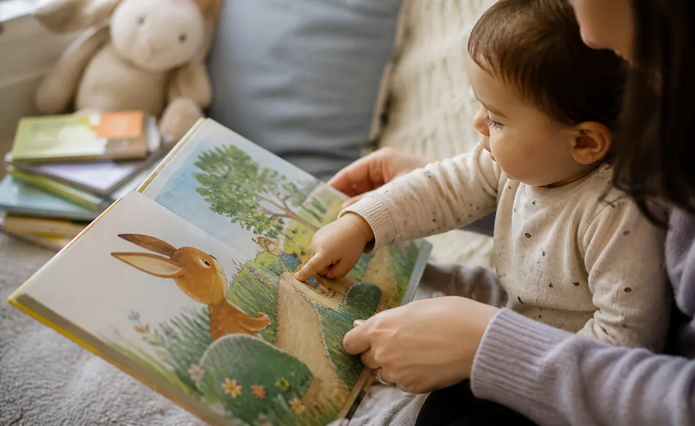

If you want to improve your child's vocabulary, start with something beautifully ordinary: read a short story, pause at one interesting word, and talk about it like it belongs in your child's world.
Vocabulary grows when children hear words often, understand what they mean, and get chances to use them. That is why story time is so powerful. A story gives new words a home: characters, feelings, problems, pictures, actions, and endings your child can remember.
The goal is not to teach dozens of words in one sitting. The goal is to make a few good words sticky.
What the article gets right, and how to go further
Many vocabulary guides rightly recommend reading aloud, singing, playing games, repeating words, naming everyday objects, and asking children questions. Those are strong basics.
The missing piece is usually a parent-friendly method. What word do you choose? What do you say after reading it? How do you avoid turning story time into a lesson? How do you bring the word back tomorrow?
Baboo's answer is simple: Say it, Show it, Play it, Repeat it. One story can become a full vocabulary moment without flashcards, pressure, or extra preparation.
The Baboo vocabulary loop
| Step | What the parent does | Example |
|---|---|---|
| Say it | Choose one useful story word and repeat it naturally. | "The rabbit is curious. Curious means he wants to know." |
| Show it | Point to the picture, gesture, object, or expression. | "See his eyes looking at the tiny door?" |
| Play it | Invite your child to act, compare, choose, or pretend. | "Can you make a curious face?" |
| Repeat it | Use the word later in a real moment. | "You looked inside the bag. You were curious too." |
1. Pick story words your child can use soon
The best first vocabulary words are not always the biggest words. Choose words that connect to your child's life: feelings, actions, places, textures, sizes, sounds, and social moments.
Useful story words include gentle, brave, tiny, enormous, wiggle, search, share, patient, cozy, frustrated, surprised, and curious. These words appear in stories and everyday life, which gives your child more chances to understand them.
2. Explain words in child-sized language
A dictionary definition is usually too abstract for young children. Keep explanations short and concrete.
- "Patient means waiting without grabbing."
- "Enormous means really, really big."
- "Gloomy means a little dark and sad."
- "Tiptoe means walking very quietly."
Then return to the story quickly. The explanation should help the story, not interrupt it for too long.
3. Comment more than you quiz
Questions can help children talk, but too many questions can make a story feel like homework. Instead of asking "What is this?" on every page, model richer language with comments.
Try: "That tower is enormous." "The puppy looks puzzled." "The girl is tiptoeing because the baby is asleep." Comments give your child words and meaning at the same time.
Make new words part of story time
Baboo Stories gives parents gentle, child-friendly stories with prompts that invite talking, choosing, feelings, and imagination.
4. Use dialogic reading without making it complicated
Dialogic reading simply means the child becomes part of the conversation instead of only listening. Reading Rockets describes this kind of shared reading with prompts, expansion, repetition, and open-ended talk.
In real parent language, it sounds like this:
- "What do you notice on this page?"
- "You said dog. Yes, a muddy dog."
- "What do you think will happen next?"
- "Have we ever felt surprised like that?"
The trick is to keep the exchange warm and brief. One good prompt is better than ten rapid-fire questions.
5. Repeat favorite stories on purpose
Repetition is one of the easiest ways to grow vocabulary. When a child hears the same story again, they have more attention available for words they missed the first time.
On the first reading, enjoy the story. On the second, notice one word. On the third, invite your child to say or act out the word. A repeated story can become a vocabulary playground.
For parents who are tired of the same book every night, our guide on repeating stories explains why this phase is so useful.
6. Build word families around one idea
Once your child knows one word, add nearby words. This helps them understand shades of meaning.
| Starter word | Nearby words | Story prompt |
|---|---|---|
| Big | huge, enormous, gigantic, tall | "Is the tree big, enormous, or tiny?" |
| Sad | gloomy, lonely, disappointed, upset | "Does the bear feel sad or disappointed?" |
| Look | peek, stare, notice, search | "Let's search for the hidden moon." |
| Nice | kind, gentle, helpful, thoughtful | "What was the kind thing she did?" |
7. Turn new words into pretend play
Children remember words more deeply when they use their bodies, voices, and imagination. After a story, spend one minute acting out a word.
- Tiptoe across the room like a quiet character.
- Build an enormous tower from pillows.
- Make a puzzled face in the mirror.
- Search for something blue, round, shiny, or tiny.
This kind of play helps vocabulary move from "word I heard" to "word I understand."

8. Bring story words into daily routines
A word sticks when it appears outside the book. Use story words during snack time, bath time, getting dressed, walks, car rides, and bedtime.
| Routine | Vocabulary moment |
|---|---|
| Getting dressed | "This sock is inside out. Let's turn it the right way." |
| Snack | "This cracker is crunchy. The banana is soft." |
| Bath | "The cup is floating. Now it is sinking." |
| Walk | "That dog is dashing. We are strolling." |
| Bedtime | "Your blanket feels cozy, like the bunny's nest." |
9. Match your approach to your child's age
Vocabulary support looks different at each stage. Keep it easy and developmentally friendly.
| Age | What helps most | Try this |
|---|---|---|
| 1 to 2 | Naming, pointing, sounds, repetition | "Bird. A tiny bird. Tweet tweet." |
| 2 to 3 | Action words, simple feelings, choices | "Is the bear stomping or tiptoeing?" |
| 3 to 4 | Why questions, pretend play, opposites | "Why is the fox hiding? Is it nervous or playful?" |
| 4 to 5 | Story retelling, categories, richer feelings | "Can you retell the brave part using the word rescue?" |
10. Use songs and rhymes as word glue
Songs, rhymes, and repeated phrases make words easier to remember. If a story has a phrase your child likes, chant it together. Clap the rhythm. Whisper it. Say it in a tiny voice, then a giant voice.
Sound play builds attention to language, and it makes vocabulary feel joyful rather than formal.
11. Follow your child's interests
A child who loves trucks can learn reverse, deliver, engine, repair, heavy, and speedy. A child who loves animals can learn habitat, gentle, pounce, protect, and camouflage.
Interest gives vocabulary traction. Start with what your child already loves, then stretch one step further.
12. Keep screens parent-led when vocabulary is the goal
Digital stories can be useful when they create more conversation between parent and child. They are less useful when they replace the adult's voice with passive auto-play.
Choose story tools that leave room for pausing, explaining, asking, repeating, and changing the story together. That is where the vocabulary growth happens.
You can read more in our guide to parent-led storytelling vs auto-play story apps.
Common vocabulary mistakes to avoid
- Teaching too many words at once. Choose one to three words and use them well.
- Quizzing constantly. Mix questions with comments, gestures, and real conversation.
- Using only labels. Add action words, describing words, feeling words, and thinking words.
- Correcting too sharply. Expand gently: "Yes, a dog. A muddy dog is splashing."
- Saving words for reading only. Bring them back during the day.
A 7-day story vocabulary plan
| Day | Focus | Parent prompt |
|---|---|---|
| Monday | Feeling word | "The turtle feels disappointed. Have you felt that?" |
| Tuesday | Action word | "The kitten pounced. Can your hand pounce softly?" |
| Wednesday | Size word | "Which one is enormous? Which one is tiny?" |
| Thursday | Texture word | "The blanket is fuzzy. What else feels fuzzy?" |
| Friday | Place word | "The fox went beneath the bridge. Where is beneath?" |
| Saturday | Kindness word | "That was thoughtful. What made it thoughtful?" |
| Sunday | Retell word | "Can you tell me the brave part again?" |
Quick scripts parents can use tonight
- "This character is curious. Curious means they want to find out more."
- "The cave is gloomy. It looks dark and a little sad."
- "She is determined. She keeps trying even though it is hard."
- "The dragon is gentle. Big, but careful."
- "He feels relieved. The problem is over, and his body can relax."
Common questions parents ask
What is the best way to improve a child's vocabulary?
Read and talk together every day. Choose a few useful words, explain them simply, connect them to pictures and real life, and repeat them naturally in different situations.
How many new words should I teach during one story?
One to three words is plenty for toddlers and preschoolers. Children need repeated, meaningful exposure more than a long list of new words.
Should I correct my child when they use a word incorrectly?
Keep correction gentle. Instead of saying "No, that's wrong," model the word clearly: "Yes, the dog is not enormous. It is tiny."
Can repeated stories really build vocabulary?
Yes. Repetition helps children hear words in a familiar context, join in with predictable phrases, and build confidence using words themselves.
Sources and further reading
- American Academy of Pediatrics: Literacy Promotion policy statement
- NAEYC: Toddlers and Reading: Describe but Don't Drill
- Reading Rockets: Dialogic Reading
- CDC: Tips for Building Structure
Turn story time into word time
Join Baboo Stories Free Stories & Updates for gentle stories, parent-led prompts, and playful ideas that help children learn new words through connection.